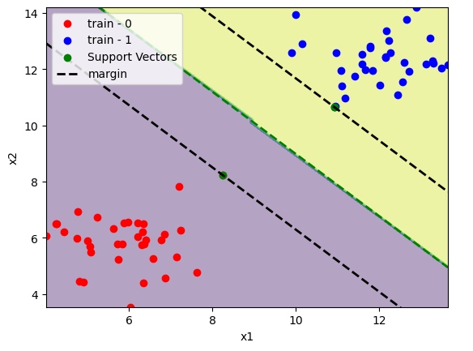
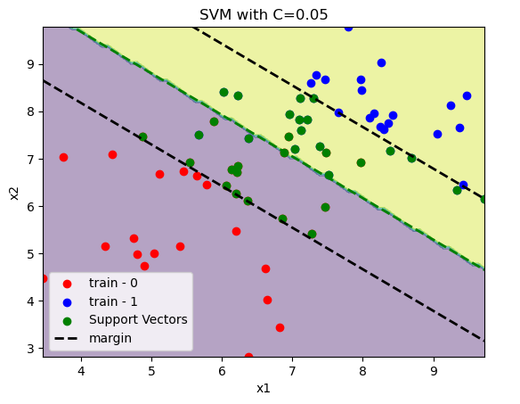
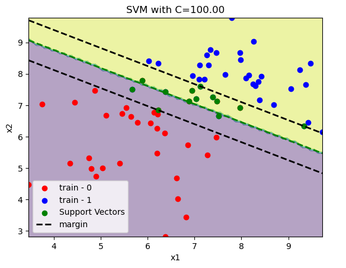

Mathematical Formulation of SVM¶
In this article we developed the mathematical formulation of the soft-margin variant of the classical maximum margin linear classifier.
How we compute the margin?¶
The main idea of the algorithm is to choose a lineal margin to separate both classes. If we have the point \(x_1\) with \(y_1 = 1\) and \(x_2\) with \(y_2 = -1\) as the extreme points of the clusters.
We can compute the margin as the difference between them as:
If we normalize the left side, we get the size of the margin in the right hand side:
Finally the margin \(\rho\) is:
Optimization model¶
In order to maximize the margin \(\rho\) one can minimize the inverse of the margin \(\frac{||w||}{2}\). To make the optimization problem more easy to solve we can get rid off the square root in the norm function and write:
Subject to:
Where the first constraint states that the training points needs to be assigned to the corresponding class. In this we allow some misclassification with a cost \(C\) trought the slacks variables \(\zeta_i\).
Getting the optimum of the problem¶
To solve this problem we can compute the Lagragian function and solve the uncostrained equivalent:
Notice the minus sign in the terms corresponding to the constraints to match the cannonical form of an optimization problem: $\( \min_{x} f(x)\)\( \)\( g(x) \le 0 \)$
The stationary point of the lagragian gives us the optimal of the problem. Taking the derivatives of the parameters and set it to zero:
If we expand the Lagragian:
And embed the stationary points of the Lagragian in the following way:
We replace \(w\) with the first expresion of the stationary point, \(w = \sum_{i=1}^{n}{\alpha_i y_i x_i}\).
We gonna remove the term \(\sum_{i=1}^{n}{\alpha_i y_i}\) because it sums zero.
We gonna remove the last group because \( C - \alpha_i - \beta_i = 0, \quad i=1..n \).
Now the Lagragian has the following form:
If we put the constraints of the stationary point we get the dual problem:
Subject to $\( \sum_{i=1}^{n}{\alpha_i y_i} = 0, \quad i=1..n\)\( \)\( 0 \le \alpha_i \le C, \quad i=1..n\)$
The first constraints corresponds to the \(\frac{\partial \mathcal{L}}{\partial b} = 0\) condition.
The second one is a little bit more tricky but since \(\alpha_i \ge 0\) and \(\beta_i \ge 0\) we have with \(\frac{\partial \mathcal{L}}{\partial \zeta}\) an upper bound of \(\alpha_i\):
How we classify¶
Once we get the solution of the dual problem and the values of \(\alpha^*\) and \(b^*\) the decision boundary is given by:
Where \(b^*\) can be computed with the KKT conditions:
Now, the interesting part is thar the decision functions depends only on the support vectors (see the summation index). That is because \(\alpha_i = 0\) for any point where the margin constraint is not binding.
How we classify¶
Once we get the solution of the dual problem and the values of \(\alpha^*\) and \(b^*\) the decision boundary is given by:
Where \(b^*\) can be computed with the KKT conditions:
Now, the interesting part is thar the decision functions depends only on the support vectors (see the summation index). That is because \(\alpha_i = 0\) for any point where the margin constraint is not binding.
import numpy as np
from sklearn.svm import SVC
from sklearn.datasets import make_blobs
from sklearn.model_selection import train_test_split
from sklearn.inspection import DecisionBoundaryDisplay
from sklearn.metrics import accuracy_score
import matplotlib.pyplot as plt
x, y = make_blobs(centers=[[6, 6], [12, 12]])
x_train, x_test, y_train, y_test = train_test_split(x, y, train_size=0.7)
model = SVC(kernel="linear")
model.fit(x_train, y_train)
print(f"train accuracy:\t{accuracy_score(y_train, model.predict(x_train)):.2%}")
print(f"test accuracy:\t{accuracy_score(y_test, model.predict(x_test)):.2%}")
In this case the dataset is linearly separable.
train accuracy: 100.00%
test accuracy: 100.00%
Lets define a function to plot it.
def plot_svm(x_train, y_train, model):
# Plot decision boundary
xlim = np.min(x_train[:, 0]), np.max(x_train[:, 0])
ylim = np.min(x_train[:, 1]), np.max(x_train[:, 1])
DecisionBoundaryDisplay.from_estimator(model, x_train, response_method="predict", alpha=0.4)
# Plot training data
plt.scatter(x_train[y_train==0][:, 0], x_train[y_train==0][:, 1], color="red", label="train - 0")
plt.scatter(x_train[y_train==1][:, 0], x_train[y_train==1][:, 1], color="blue", label="train - 1")
# Plot support vectors
plt.scatter(x_train[model.support_][:, 0], x_train[model.support_][:, 1], color="green", label="Support Vectors")
# Plot decision boundary
w1, w2 = model.coef_[0]
b = model.intercept_
margin = 1 / np.sqrt(np.sum(model.coef_**2))
x1 = np.linspace(*xlim, 2)
x2 = (-w1 * x1 - b) / w2
plt.plot(x1, x2, color="green", linestyle="dashed", linewidth=2)
# Plot margin upper
x1 = np.linspace(*xlim, 2)
x2 = (-w1 * x1 - b) / w2 + np.sqrt(1 + (w1/w2)**2) * margin
plt.plot(x1, x2, color="black", linestyle="dashed", linewidth=2, label="margin")
# Plot margin lower
x1 = np.linspace(*xlim, 2)
x2 = (-w1 * x1 - b) / w2 - np.sqrt(1 + (w1/w2)**2) * margin
plt.plot(x1, x2, color="black", linestyle="dashed", linewidth=2)
plt.xlabel("x1")
plt.ylabel("x2")
plt.xlim(xlim)
plt.ylim(ylim)
plt.legend()
plot_svm(x_train, y_train, model)
plt.show()

We can see only a few support vectors in comparision with the dataset size. Since the classes are linearly separable there is no training point inside the margin.
If we have a non linearly separable dataset. We need to pay the price \(C \sum_{i=1}^{n}\zeta_i\) for misclassification. In the examples below we increase the value of \(C\) and see how the margin is reduced.
x, y = make_blobs(centers=[[6, 6], [8, 8]])
x_train, x_test, y_train, y_test = train_test_split(x, y, train_size=0.7)
C = 0.05
model = SVC(C=C, kernel="linear")
model.fit(x_train, y_train)
print(f"train accuracy:\t{accuracy_score(y_train, model.predict(x_train)):.2%}")
print(f"test accuracy:\t{accuracy_score(y_test, model.predict(x_test)):.2%}")
plot_svm(x_train, y_train, model)
plt.title(f"SVM with C={C:.2f}")
plt.show()
train accuracy: 92.86%
test accuracy: 100.00%
 
Non linear separable data¶
There are some cases where data is non linear separable like the following:
from sklearn.datasets import make_circles
x, y = make_circles([100, 100], factor=0.5)
x_train, x_test, y_train, y_test = train_test_split(x, y, train_size=0.7)
C = 100
model = SVC(C=C, kernel="linear")
model.fit(x_train, y_train)
print(f"train accuracy:\t{accuracy_score(y_train, model.predict(x_train)):.2%}")
print(f"test accuracy:\t{accuracy_score(y_test, model.predict(x_test)):.2%}")
plot_svm(x_train, y_train, model)
plt.show()
To avoid this wew can use the Kernel-Trick. When the basic idea is to use a function \(\phi\) that maps the pairs \([x_i, x_j]^t\) and returns a higher dimension data. for example \([x_i, x_j, x_i^2 + x_j^2]^t\).
Now the decision boundary changes to:
The function that can do this mapping, is one that fullfil the conditions of the Mercer theorem. The mercer theorem states that the kernel matrix needs to be symmetric in \(\mathcal{X}\times\mathcal{X} \in \mathcal{R}\).
The objective of the dual to determine the \(\alpha_i\) becomes:
This is interesting because we dont need to compute a function \(\phi(x)\) since we only need the correspoding entry from the gram matrix \(G_{ij} = \langle \phi(x_i), \phi(x_j) \rangle\).
Example¶
In the following example we gonna choose the following kernel:
This is called radial basis function (rbf).
x = np.linspace(-2, 2)
gammas = [1, 5, 10]
for gamma in gammas:
phi = np.exp(-gamma*(x**2))
plt.plot(x, phi, label=f"gamma = {gamma:.1f}")
plt.title("RBF kernel")
plt.legend()
plt.grid()
plt.show()
x, y = make_circles([100, 100], factor=0.5)
x_train, x_test, y_train, y_test = train_test_split(x, y, train_size=0.7)
C = 1
gamma = 1
model = SVC(C=C, kernel="rbf", gamma=gamma)
model.fit(x_train, y_train)
print(f"train accuracy:\t{accuracy_score(y_train, model.predict(x_train)):.2%}")
print(f"test accuracy:\t{accuracy_score(y_test, model.predict(x_test)):.2%}")
# Plot decision boundary
DecisionBoundaryDisplay.from_estimator(model, x_train, response_method="predict", alpha=0.4)
# Plot training data
plt.scatter(x_train[y_train==0][:, 0], x_train[y_train==0][:, 1], color="red", label="train - 0")
plt.scatter(x_train[y_train==1][:, 0], x_train[y_train==1][:, 1], color="blue", label="train - 1")
# Plot support vectors
plt.scatter(x_train[model.support_][:, 0], x_train[model.support_][:, 1], color="green", label="Support Vectors")
plt.legend()
plt.show()
If we increase \(\gamma\) we gonna have a more sharp decision boundary between the support vectors. We gonna see a decision boundary like a doughnut.
C = 100
gamma = 200
model = SVC(C=C, kernel="rbf", gamma=gamma)
model.fit(x_train, y_train)
print(f"train accuracy:\t{accuracy_score(y_train, model.predict(x_train)):.2%}")
print(f"test accuracy:\t{accuracy_score(y_test, model.predict(x_test)):.2%}")
# Plot decision boundary
DecisionBoundaryDisplay.from_estimator(model, x_train, response_method="predict", alpha=0.4)
# Plot training data
plt.scatter(x_train[y_train==0][:, 0], x_train[y_train==0][:, 1], color="red", label="train - 0")
plt.scatter(x_train[y_train==1][:, 0], x_train[y_train==1][:, 1], color="blue", label="train - 1")
# Plot support vectors
plt.scatter(x_train[model.support_][:, 0], x_train[model.support_][:, 1], color="green", label="Support Vectors")
plt.legend()
plt.show()